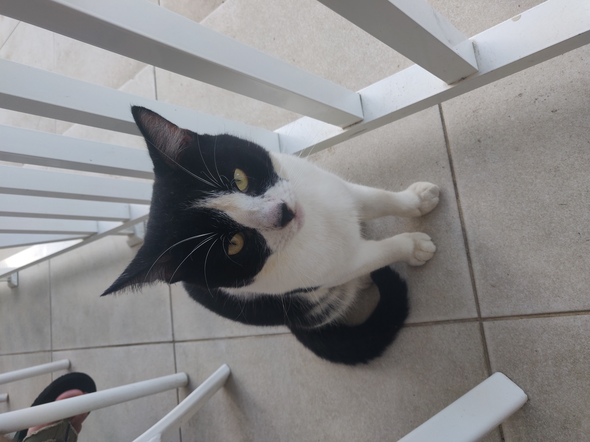
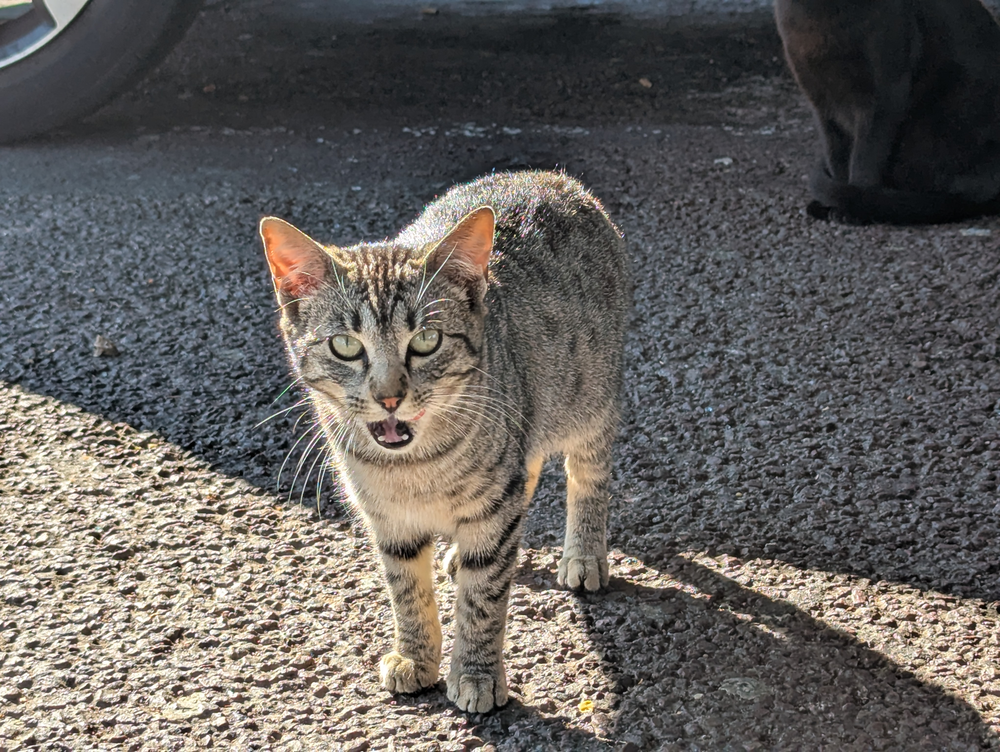
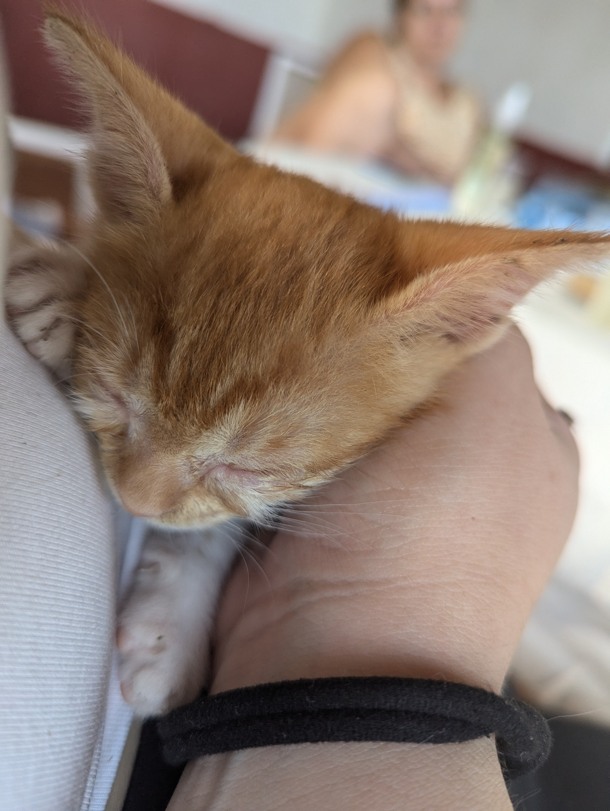
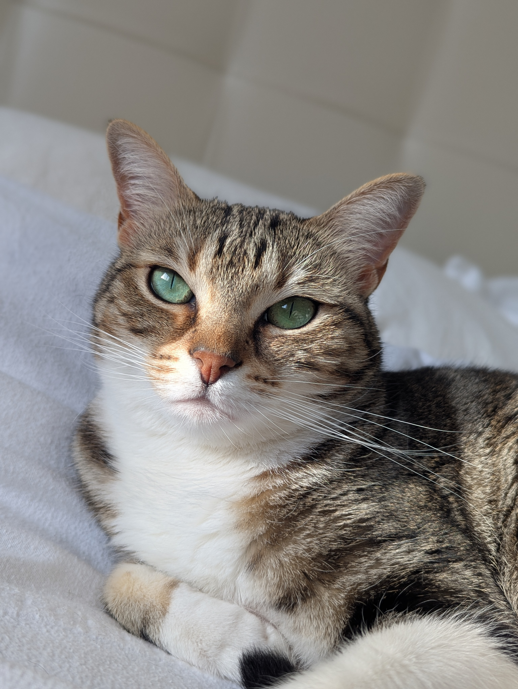
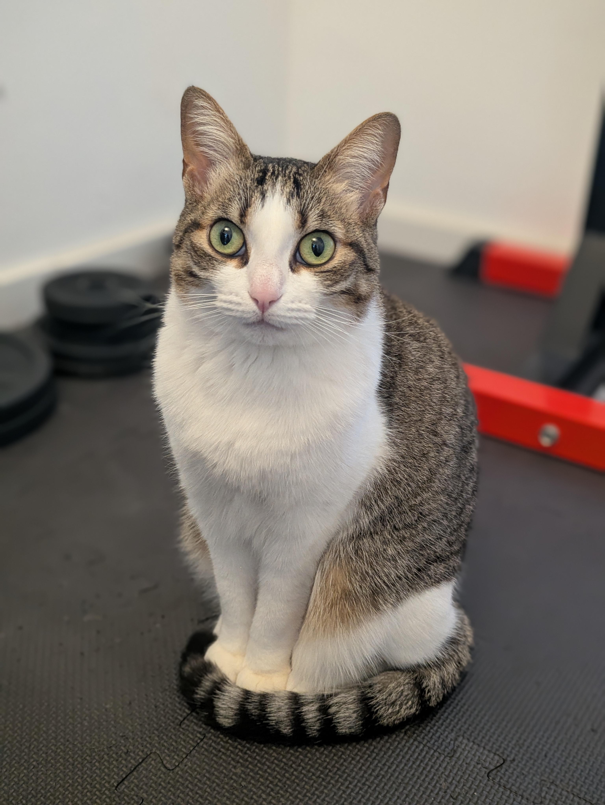
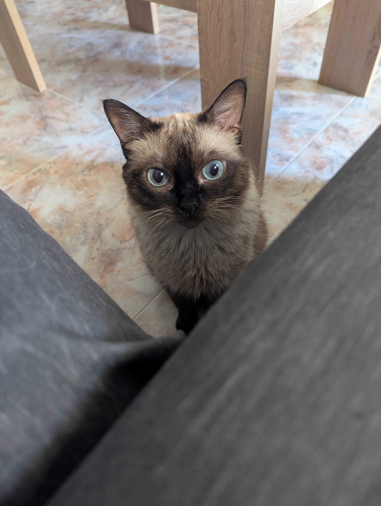

Necessiten una familia
Paolo

Paolo és un gat adult blanc i negre, tranquil i molt afectuós. Li agrada estar a prop de les
persones, gaudir de carícies i descansar en el seu raconet preferit. És net, equilibrat i
perfecte per a una llar calmada. Busca una família que li done amor i seguretat per sempre.
Parda

Parda és una gata jove, curiosa i juganera, amb un caràcter dolç que enamora. Li encanta
explorar, jugar i després buscar mims quan es cansa. És sociable, alegre i s’adapta bé a la vida
en casa. Busca una família amb qui créixer i compartir molts moments feliços.
Ronja

Ronja és una gateta taronja d’uns dos mesos, plena d’energia i tendresa. Li encanta jugar,
explorar-ho tot i després adormir-se ben a gust. És curiosa, dolça i molt divertida. Busca una
família que la cuide i l’acompanye mentre creix feliç.
Ja ténen familia
Taiga

Taiga ja té familia. És una gata a la que li agrada la seua independència i passar els dies
tranquil·la
mirant per la finestra i vore els coloms volar. Somia amb caçar algun i fer-se amics, o no?
Sora

Sora també té familia, és germana de Taiga i és molt carinyosa. Li encanta fer la croqueta i que
li rasquen la pantxa.
Li encanta fer trastaes i quan la mare no mira se'n va correns a menjar-se el plat de la seua
germana.
Lilith

Lilith viu amb la Laura en una casa tota per a elles, tot i que de tant en tant les visita la
germanastra canina de nom Trece (agárramela que me crece).
Encara s'estàn coneixent però amb el temps de segur que es faran inseparables. A Lilith li
agrada eixir al balcó i fer la migdiada en la cadira
mentre pren el sol. Com que pateix hiperestèsia felina, la Laura ha d'administrar-li medicació
dues vegades al dia, però ho porta super bé i està
molt ben cuidada.